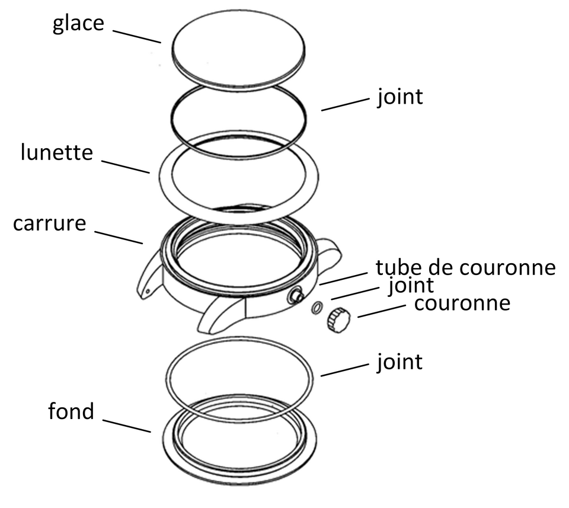

Haute Horlogerie — Federal Diploma
7. The Habillage (Watch Exterior)
Watchmaking Expertise Course — Case, Crystal, Crown & Water Resistance
Watchmaking Expertise Course — Case, Crystal, Crown & Water Resistance

🏁 Module 07: The comprehensive study of the habillage will be available soon.
The horological universe is infinite... Let's continue the discussion!
While awaiting the finalization of this habillage module, I encourage you to pursue your own research. If during your learning you have questions, doubts, or simply wish to share a discovery, my door remains wide open. Write to me at swisstime.expert@gmail.com.
✉️ Contact the Expert